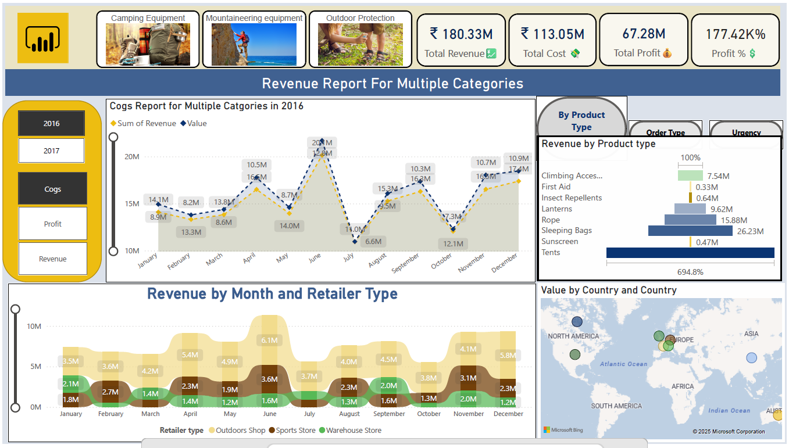

This comprehensive Bank Loan Analysis, developed using Python's data science libraries (Pandas, Matplotlib, and Plotly), provides a detailed examination of a financial loan portfolio. It offers a deep dive into lending activities by tracking key performance indicators (KPIs), assessing portfolio health through good vs. bad loan analysis, and visualizing critical trends. With insights into monthly performance, regional distribution, and borrower characteristics—such as home ownership and employment length—this report delivers actionable intelligence for risk assessment and strategic portfolio management.

This interactive Sales and Revenue Dashboard, built with Microsoft Power BI,
provides a comprehensive analysis of business performance across multiple dimensions.
It visualizes monthly revenue trends, retailer-type contributions, and country-wise sales distribution.
The report includes detailed COGS tracking, total revenue and cost breakdowns, profit analysis,
and dynamic KPIs for rapid decision-making.
With category-level insights into camping, mountaineering, and outdoor protection products,
this dashboard delivers actionable intelligence for sales optimization.

In this project, I analyzed multi-source customer data from SmartBank (a Lloyds Banking Group subsidiary) to deliver actionable, AI-powered insights for customer retention.
Key Steps:
Integrated demographic, transactional, service, and digital engagement data into a unified analytics dataset
Explored and visualized key churn signals using Python, pandas, matplotlib, and seaborn
Engineered features and addressed data quality issues: missing values, inconsistent formats, outliers
Built and evaluated a Random Forest model to predict customer churn, achieving a ROC-AUC of 0.82
Interpreted feature importances and presented results in a corporate-style, infographic report

Tackled a real-world HR dataset of 15,000 employees, transforming messy, inconsistent raw data into a clean, analytics-ready format. Leveraged Python, pandas, and numpy to handle missing values, fix data types, remove duplicates, address outliers, and ensure robust salary data. The end result: a high-quality dataset ready for insightful HR analytics and machine learning.
Key Steps:
- Imported, audited, and profiled raw CSV data
- Fixed inconsistent data types and handled missing values smartly
- Removed duplicates and corrected impossible values (e.g., negative salaries)
- Detected and removed outliers for salary and other numeric fields
- Delivered a clean, well-structured dataset suitable for dashboards, reporting, or AI models
Impact:
Enabled the HR team to trust their analytics, automate reporting, and extract actionable workforce insights—while saving countless analyst hours on manual data fixes.

Tackled a real-world HR dataset of 15,000 employees, focusing on transforming messy, inconsistent raw data into a clean, analytics-ready format. Using Python, pandas, and numpy, I handled missing values, fixed data types, removed duplicates, addressed outliers, and ensured robust salary data. The result: a reliable, high-quality dataset ready for insightful HR analytics and machine learning.
Key Steps:
Imported, audited, and profiled raw CSV data
Fixed inconsistent data types and handled missing values smartly
Removed duplicates and corrected impossible values (e.g., negative salaries)
Detected and removed outliers for salary and other numeric fields
Delivered a clean, well-structured dataset suitable for dashboards, reporting, or AI models

Mastered the fundamentals of NumPy by working with real-world numerical datasets, focusing on efficient data manipulation and computation. Leveraged NumPy arrays to accelerate calculations, perform complex transformations, and enable high-performance analytics—laying a strong foundation for scientific computing and machine learning in Python.
Key Steps:
Loaded and explored numerical data using NumPy arrays
Applied array slicing, indexing, and reshaping for flexible data manipulation
Performed statistical analysis and aggregations directly on arrays
Implemented mathematical operations and vectorized computations for speed
Utilized broadcasting and advanced functions for complex data processing tasks

Developed strong proficiency in Matplotlib by visualizing real-world datasets and transforming raw numbers into compelling, insightful graphics. Utilized Matplotlib’s versatile plotting capabilities to create a range of charts and visualizations—enabling clear data storytelling and deeper analytical insights for scientific computing and machine learning projects in Python.
Key Steps:
Designed and customized plots including line graphs, bar charts, scatter plots, and histograms Integrated Matplotlib with NumPy for seamless data-to-visualization workflows Enhanced readability through thoughtful use of labels, legends, titles, and annotations Applied subplots and figure customization for multi-dimensional data exploration Exported publication-quality graphics for reports, presentations, and dashboards

Mastered the art of data storytelling using Seaborn—Python’s most stylish and intuitive statistical visualization library. Explored real-world datasets to craft beautiful, informative graphics and unlock deeper analytical insights. Leveraged Seaborn’s high-level API and powerful aesthetics to make data pop in scientific computing, analytics, and machine learning projects.
Key Steps:
Created rich statistical plots including barplots, violin plots, heatmaps, scatterplots, and pairplots
Customized color palettes (e.g., palette="GnBu", "pastel") for visual impact and clarity
Combined Seaborn with Pandas for seamless data manipulation and visualization workflows
Enhanced visualizations with hue, style, and facet grids for multi-dimensional analysis
Generated publication-ready plots for reports, presentations, and dashboards

A simple PHP & MySQL ticketing system for helpdesks and IT support. Submit, track, and manage support tickets via your browser. Easy setup—just run on XAMPP. Includes admin panel, ticket status, and user management. Perfect for students or small teams.
.webp)
Extracted and cleaned textual information from Blackcoffer project web pages using Python web scraping techniques. Automated the process of crawling, parsing HTML, and transforming unstructured content into structured, analytics-ready datasets. This project enabled efficient content analysis, streamlined data preparation for NLP tasks, and provided clean data for deeper business insights.